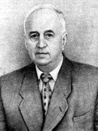

Средства автоматизации и управления
Амплитудное управление уже разобрали. Теперь — динамика вала и чем крутить Uу
Баланс на валу: тянет управление, тормозит нагрузка. Нажмите коэффициент — подсветится формула и схема
(Tдв p + 1) ω(p) = Kдв Uупр(p) − Kм Mн(p)
M₀ в этой модели не учитывают — отличие от записи для МПТ
Форма та же, что у МПТ. Разница — в модели нет M₀
Нажмите звено — цепочка от Uупр до скорости вала
Скачок Uупр — вал разгоняется по экспоненте. Потом удар Mн — просадка
Для такой задачи берут двухтактный усилитель с трансформаторным выходом
Нажмите узел схемы — от сигнала до обмотки управления
Двухфазный АД крутят и магнитным усилителем — не только транзисторным двухтактом
Шаг 1 · что внутри простейшего МУ. Дальше — почему растёт ток в нагрузке
Шаг 2 · Iу сдвигает точку по B–H → падает XL → растёт ток в Rн
Шаг 3 · упала μ → упала L → упала XL → вырос Iн. Нажмите вкладку или блок на схеме — справа пояснение
L ∼ wр2 μ · XL = ωL
Главный минус — большая инерция. Нажмите пункт или кривую — справа пояснение
После МУ — частотные преобразователи (инверторы). Нажмите пункт — справа пояснение
Промежуточное преобразование. Нажмите блок или фазу — справа пояснение
Трёхфазный мостовой выпрямитель ПЧ. Нажмите узел или график — справа пояснение

Андрей Николаевич Ларионов (16 июля 1889, Москва — 7 февраля 1963, там же) — советский учёный-электротехник, доктор технических наук, член-корреспондент АН СССР (1953), заслуженный деятель науки и техники РСФСР (1959).
В 1919 году окончил МВТУ со званием инженера-электрика и остался преподавать. В 1924 году предложил трёхфазную мостовую схему выпрямления на шести диодах — схему Ларионова, которую до сих пор ставят на входе частотных преобразователей.
С 1930 года работал в МЭИ (с 1933 — профессор); в 1921–1941 — также во Всесоюзном электротехническом институте. Специалист по электрическим машинам и электроприводу; участвовал в электрификации нефтяных промыслов, пуске турбо- и гидрогенераторов, разработке авиационного электрооборудования (в т. ч. для самолёта «Максим Горький»).
С 1953 года — в Институте автоматики и телемеханики АН СССР. Награждён орденом Ленина.
Зеркало моста Ларионова, но на транзисторах. Нажмите узел — справа пояснение
Биполярный транзистор с изолированным затвором. Нажмите слой или символ — справа пояснение
Таблица задаёт, какие VT открыты. График — какие токи Ia, Ib, Ic получаются. Нажмите строку или полосу на графике
| Интервал | VT1 | VT2 | VT3 | VT4 | VT5 | VT6 |
|---|---|---|---|---|---|---|
| t0–t1 | 1 | 0 | 0 | 0 | 1 | 1 |
| t1–t2 | 1 | 1 | 0 | 0 | 0 | 1 |
| t2–t3 | 0 | 1 | 0 | 1 | 0 | 1 |
| t3–t4 | 0 | 1 | 1 | 1 | 0 | 0 |
| t4–t5 | 0 | 0 | 1 | 1 | 1 | 0 |
| t5–t6 | 1 | 0 | 1 | 0 | 1 | 0 |
ЭДС на холостом ходу — от Φ и ω. Под нагрузкой поток ещё и «портит» вид нагрузки. Нажмите блок
Характер нагрузки задаёт сдвиг фазы ψ между ЭДС и током. Нажмите вид
Тип нагрузки или ψ — смотрите, как меняются Φ₂ и ЭДС
E ∼ Φрез · n · Φрез ≈ Φ0 − Φ2·sinψ
sinψ = 0 → Φрез ≈ Φ0 → E ≈ E0
ЭДС пропорциональна результирующему потоку. Нажмите звено цепочки
Крутите ползунок n — появятся Φq и Uтг. Частота выхода всегда равна частоте Uв
Uтг ∼ n
n = 0 → Φq = 0 → Uтг = 0
Ротор идёт строго с полем. Нажмите звено: формула → проблема пуска → асинхронный пуск
Маломощные СД для САУ — как обходят трудный пуск. Нажмите тип
Два вопроса: куда может крутиться вал и из чего сделан ротор. Нажмите пару для сравнения
Импульс → дискретный шаг. Жмите «Шаг» или «Авто»
Δθ = 360° / Nтакт
такт 1 / 4 · θ = 0° · шаг 90°
Рис. 3.56: токи I₁…I₄ во времени. а — упрощённо, б — больше момент, полшаг — Δφ = 45°
а · I₁ · θ = 0° · шаг 90°
Рис. 3.57: уменьшить шаг — больше магнитов на роторе (p) и электрическое дробление
Δφ = 90° / p
p = 1 · полный · Δφ = 90° · θ = 0°
Рис. 3.58: гребёнка на полюсах и роторе. Питаем полюс — зубья совпадают, шаг = ½ зуба
полюс 1 · зубья совпали · Rм мин · шаг 0
Рис. 3.59: от импульсов до вала. Выберите тему — схема справа меняется
ω ∼ fкомм
формирователь → коммутатор → 4 усилителя → ШД